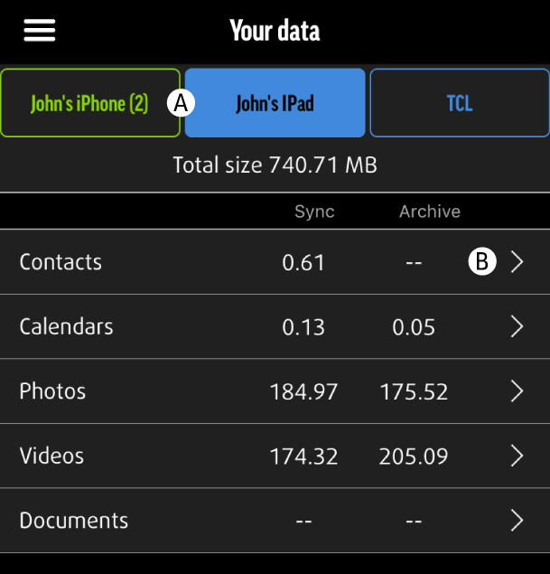
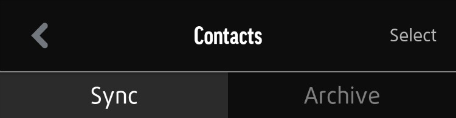

Transfer ausgewählter Daten zwischen Geräten
Anstatt des Transfers ganzer Kategorien zwischen Geräten, die auf einem einzelnen MEEM-Kabel gesichert sind, können Sie einfach einzelne Daten zwischen Geräten transferieren.
Denken Sie immer daran, dass Sie einzelne auf MEEM gesicherte Daten auf das momentan verbundene Gerät transferieren.
Gehen Sie zuerst auf die Seite mit der Zusammenfassung, wo alle auf dem MEEM-Kabel gesicherten Geräte angezeigt werden, und wählen das Symbol des Geräts, von dem transferiert werden soll. (A)

Jetzt sehen Sie die Seite mit der Zusammenfassung des ausgewählten Geräts. Wählen Sie die Kategorie der einzelnen Daten für den Transfer (B), tippen dann in der Kategorie oben auf dem Bildschirm auf die Auswählen-Schaltfläche, scrollen durch die Inhalte und wählen dabei alle aus, die Sie teilen möchten.
Wenn Sie alle zu teilenden Inhalte in der Kategorie ausgewählt haben, tippen Sie auf das Teilen-Symbol (ein Kontrollkästchen mit einem nach oben zeigenden Pfeil), woraufhin die Aufforderung „Zur Bibliothek hinzufügen“ erscheint. Tippen Sie auf die Aufforderung und alle ausgewählten Daten werden auf dem Telefon gespeichert, das momentan mit dem MEEM-Kabel verbunden ist.

Auf gleiche Weise können Sie einzelne Daten in jeder Kategorie auswählen, woraufhin sie in den entsprechenden Ordnern auf dem Gerät gespeichert werden.